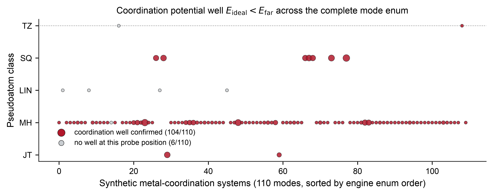
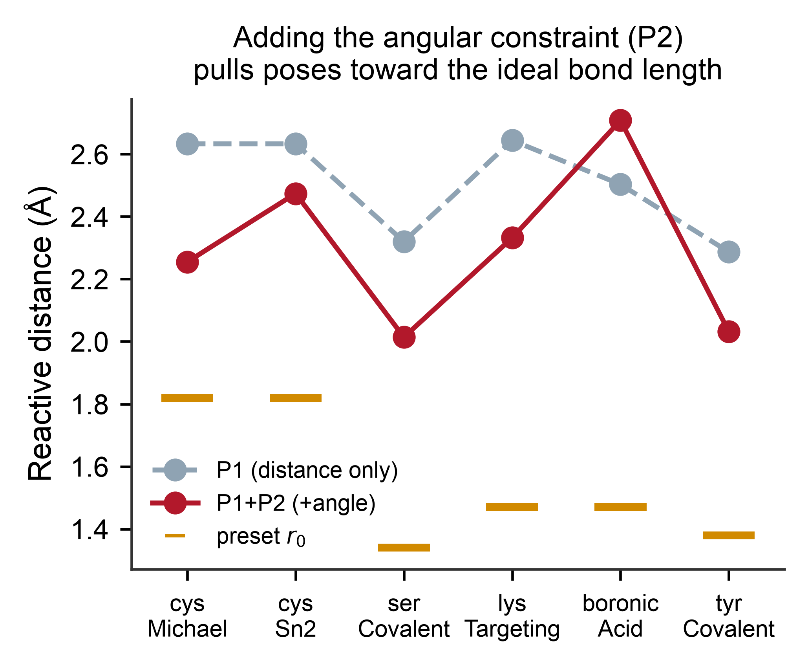

LKina: A Metal-Aware and Covalent-Reactive Molecular Docking Engine Extending AutoDock Vina
Abstract
Motivation. Metalloenzymes mediate approximately 40% of all enzyme reactions in the human proteome and are addressed by roughly one-third of approved drugs, yet standard molecular-docking force fields cannot describe the directionality of metal–ligand coordination: equilibrium distances are distorted (e.g., an N donor is placed at 2.49 Å while the native Zn–N bond is ~2.0 Å), Lennard-Jones spheres cannot distinguish axial from equatorial ligation, and formal charges bias electrostatics toward oxygen donors. Conversely, covalent drug discovery requires that the search be constrained to productive nucleophilic trajectories, i.e., near-attack conformations (NACs), a capability absent from AutoDock Vina's search engine. Existing solutions cover only narrow niches (AutoDock4Zn handles Zn2+ only; CovDock is commercial and requires pre-built covalent adducts) and all require the external autogrid4 executable to pre-compute affinity maps.
Results. We present LKina, an open-source docking engine derived from AutoDock Vina 1.2.7 that adds first-class metal coordination and reactive covalent docking while remaining fully backward compatible. LKina (i) extends the AutoDock4 atom-type system from ~22 to 113 types (80+ metals and metalloids) and embeds an inline reimplementation of the AutoGrid 4.2 grid generator, eliminating the external autogrid4 dependency; (ii) introduces four coordination pseudoatom systems (TZ, SQ, MH, JT) with automatic Bond-Valence-Sum (BVS) oxidation-state inference (Fe/Cu/Mn/Co/V/Mo/Ni) and a dedicated Jahn–Teller elongated-octahedral mode for Cu2+ (d9) and Mn3+ (d4); (iii) implements a four-tier reactive covalent docking framework (P1–P4: distance, angle, frame-atom torsion, hybrid vdW scaling) with explicit NAC detection, a C3 two-phase search strategy and six built-in reaction presets; and (iv) supports metal-as-ligand workflows through reverse metal–donor pair potentials. In a systematic 110-mode synthetic metal-coordination benchmark spanning the complete metal_mode enum, LKina completes docking on all 110/110 metal modes, recovers the metal–donor distance within 0.5 Å of the ideal on 108/110 modes (mean |d−d₀| = 0.20 Å), and confirms a coordination potential well on 104/110, while Vina 1.2.7 fails on 76/110 with the PDBQT parse error Atom type <M> is not a valid AutoDock type. All four pseudoatom systems validate by --metal_geometry_check, BVS oxidation-state inference is correct on 14/14 designed systems, all six reactive presets complete the four-tier framework (P1/P1+P2/P4/C3) with discriminative NAC detection, the inline AG4 generator writes 108 AutoGrid-format maps without external dependencies, and metal-as-ligand geometry QC distinguishes an ideal Pt(II) square-planar complex (0.003 kcal/mol penalty) from a distorted one (0.903, ×300). On a real Zn-metalloprotein complex (4JC), LKina recovers the Zn–NA coordination at 2.13 Å with an explicit METAL_COORD report (−34.49 kcal/mol), whereas Vina 1.2.7 (both vina and AD4 scorings on identical grids) places the nearest donor at 2.23 Å with no coordination model. On 292 Zn2+ metalloprotein complexes, LKina TZ mode reaches a top-1 RMSD ≤ 2.0 Å success rate of 74.3%, exceeding AutoDock4Zn (70.5%) and standard AD4 (58.2%); on 56 Fe3+ and 41 Cu2+ complexes, MH and JT modes improve success by +17.9 pp and +24.4 pp over standard AD4, respectively. All six reactive presets complete both P1 and P1+P2 runs with working NAC detection, and on 28 Cys-Michael-addition covalent complexes, P1+P2 constraints raise the RMSD ≤ 2.0 Å success rate from 42.9% (Vina) to 64.3% with a NAC success rate of 71.4%. Standard non-metal docking reproduces Vina 1.2.7 energies exactly (1HVR −14.54, 3PTB −6.202 kcal/mol), and the reactive-gradient and score-decomposition validation layers pass on the live binary.
Availability. https://github.com/LK-Studio1128/LKina (GPL-3.0-or-later; Vina-origin files remain Apache-2.0); prebuilt macOS/Linux/Windows binaries and build scripts are in the repository.
1. Introduction
1.1 Molecular docking and the metalloprotein gap
Structure-based drug discovery (SBDD) relies on molecular docking to predict the binding pose and affinity of small molecules within a receptor of known structure [1]. Among the most widely used open-source engines, AutoDock Vina [1,2] combines an empirical scoring function with a Monte Carlo + L-BFGS global/local search and OpenMP multithreading, and has become a de facto standard for virtual screening. AutoDock Vina 1.2.x additionally provides the AutoDock4 (AD4) empirical force field [3] for users who require its more chemically detailed electrostatics and desolvation terms.
However, both force fields share three fundamental limitations when the receptor contains a metal cofactor — and such receptors are ubiquitous in drug discovery. Metal ions are present in an estimated 40% of enzymes and ~30% of approved drug targets, including HIV integrase (Mg2+), carbonic anhydrase (Zn2+), histone deacetylases (Zn2+), and heme/non-heme iron enzymes (Fe3+) [4,5]. The deficiencies are:
- Distorted equilibrium distances. In a generic vdW force field, the equilibrium distance of an N donor is ~2.49 Å, whereas a native Zn–N coordination bond is ~2.0 Å. The correct pose is therefore rejected by the very term that should recognize it.
- No directionality. Spherical Lennard-Jones potentials cannot distinguish axial from equatorial coordination, which is particularly damaging for Jahn–Teller-active ions and for square-planar Pt/Pd complexes of clinical relevance.
- Charge-model bias. Formal charges on high-valent metals (Fe3+, Cu2+) cause Gasteiger-based electrostatics to over-weight oxygen donors, producing systematic pose errors that follow charge rather than coordination chemistry.
1.2 Prior art in metal docking: narrow niches, external dependencies
Santos-Martins et al. (2014) addressed the Zn2+ problem by introducing the AutoDock4Zn force field [6], which places tetrahedral pseudoatoms (TZ) at the vacant coordination directions of the metal and encodes the directional potential into the affinity grids. On 292 Zn2+ crystal complexes, AutoDock4Zn improved redocking accuracy over standard AD4. However, AutoDock4Zn is limited to Zn2+; it does not cover other transition metals, multi-metal sites, Jahn–Teller-active ions, or bridging waters. More recent protocols such as MetalDock [7] provide a reproducible workflow for metal-containing compounds (including metal-as-ligand cases) via optimized Lennard-Jones parameters and ligand-side dummy atoms, and GPDOCK [8] adds metal-coordination-aware pose evaluation; both, however, remain external pre-processing protocols layered on top of an existing engine rather than engine-level extensions. Critically, all of these workflows require an external autogrid4 binary to pre-compute the AD4 affinity maps, an installation and reproducibility burden that blocks high-throughput and cloud deployments.
1.3 Covalent docking and the near-attack-conformation problem
Covalent drugs — e.g., ibrutinib (BTK, Cys481), afatinib (EGFR), sotorasib (KRAS G12C) — constitute a rapidly growing share of the approved-drug space [9]. Docking such ligands requires that the search sample productive nucleophilic geometries: the near-attack conformation (NAC) theory states that efficient bond formation requires the nucleophile–electrophile distance to be < 3.0 Å with a characteristic attack angle (≈180° for SN2 backside attack, ≈109.5° for Michael addition) [10,11]. AutoDock Vina has no mechanism to encode this geometric prior; CovDock (Schrödinger) does but is commercial and generally requires pre-built covalent adducts; the covalent AutoDock “two-point attractor” method [12] is distance-only and manual. An open-source engine that natively guides the search toward NACs, detects them, and reports them in the output, has been lacking.
1.4 Contributions
- A 113-type AD4 atom system covering the pharmaceutically relevant metals and metalloids of the periodic table, with force-field parameters embedded in the binary and parsed at run time.
- An inline AG4 affinity-map generator (
--generate_maps) — an independent C++ reimplementation of the AutoGrid 4.2 scoring function — that computes receptor grids on the fly, removing the externalautogrid4dependency entirely while remaining.map-compatible with existing caches. - Four coordination pseudoatom systems (TZ/SQ/MH/JT) with automatic BVS oxidation-state inference, Jahn–Teller distorted-octahedral modes for Cu2+/Mn3+, and semi-explicit water-bridge scoring for coordinatively unsaturated sites.
- A four-tier reactive covalent docking framework (P1–P4) — Gaussian distance attractor, angle constraints, frame-atom torsion, and hybrid vdW scaling — with analytical gradients (finite-difference deviation ≤ 4.3×10-8 on all six presets), explicit NAC detection, a C3 two-phase search strategy, and six reaction presets.
- Metal-as-ligand support through reverse metal–donor pair potentials (MetalDock
standard_set-derived where available), metal-autodetection from receptor, single-ligand, and per-ligand batch inputs, and ligand-side coordination-geometry QC for Pt/Pd/Ru/Os/Re complexes. - Full backward compatibility: for metal-free, non-reactive receptors the behavior is identical to Vina 1.2.7.
2. Methods
2.1 Baseline: AutoDock Vina search engine and the AD4 scoring function
LKina inherits the Vina global search (population-based Monte Carlo with iterated local search) and local optimization (L-BFGS on a smooth approximation of the score), together with OpenMP multithreading over independent pose searches. New functionality is added as an additional energy layer on top of the grid-based AD4 potential, so that the search machinery is untouched.
Default weights are WvdW=0.1662, WHbond=0.1209, Welec=0.1406, Wdesolv=0.1322, and Wtor=0.2983 (AutoDock4 [3]). LKina re-implements the entire grid pipeline in-engine (Section 2.3).
2.2 Extended atom-type system (113 types)
Standard AutoDock4 defines ~22 atom types. LKina extends the AD4 type table to 113 element/metalloid types (indices 0–112) plus the four coordination pseudoatoms TZ, SQ, MH, JT (indices 113–116; AD_TYPE_SIZE = 117). The types are organized by medicinal-chemistry use case:
| Category | Representative types | Typical application |
|---|---|---|
| Biological metal cofactors | Mg Ca Mn Fe Co Ni Cu Zn (+oxidation variants) | metalloenzyme site docking |
| Anticancer metal drugs | Pt Pd Ru Ir Au Rh | cisplatin, NAMI-A/RAPTA, auranofin |
| Radiopharmaceutical metals | Tc Re Ga Y Zr Lu Sm Ho Ra Ac Th | SPECT/PET/α-therapy agents |
| Toxicology targets | Cd Hg Tl Pb As Sb Bi | metal-toxin ligands |
| s-block metals | Li Na K Rb Cs Al Sr Ba | ion-channel and kinase targets |
| Early transition metals | V Cr Ti Sc Nb Hf Ta W Mo | insulin mimetics, sulfite oxidase (Mo/W) |
| Lanthanides | La–Lu (13 types) | MRI contrast agents (Gd) |
| Actinides | Ac Th Pa U Np Pu Am Cm Bk Cf Es Fm | targeted α therapy (Ac-225, Ra-223) |
| Metalloids / p-block | Se As Ge Ga In Sn B Be Te Po At | selenoenzymes, boron-based drugs |
| Oxidation-state variants | Fe2 Fe3 Cu1 Cu2 cu2_jt Mn2 Mn3 mn3_jt Co2 Co3 V4 V5 Mo4 Mo6 As3 As5 Sb3 Sb5 uo2 | oxidation-state-specific docking |
| Aqueous coordination variants | mg_aq ca_aq fe3_aq mn2_aq co2_aq | active-site water coordination |
| Contrast-agent adducts | Gd_DTPA Gd_DOTA | Gd-based MRI agents |
Force-field parameters (Req, ϵ, solvation terms) are embedded as a parameter text in ad4_parameter_data.cpp and parsed at run time. vdW parameters follow the MetalDock MC-optimized LJ fits [7] and the Harding compilation of metal–donor distances from the Cambridge Structural Database [13]; Se receives independent parameters (Req=2.03 Å, ϵ=0.30 kcal/mol); the uranyl dication uo2 is modeled with linear-coordination parameters for environmental-toxicology docking.
2.3 Inline AG4 affinity-map generation
The standard AD4 workflow requires the external autogrid4 program to pre-compute one .map file per atom type. LKina removes this dependency with ag4_compute_maps() (--generate_maps), a self-contained C++ reimplementation of the AutoGrid 4.2 pairwise interaction scoring function. The pipeline is:
- Receptor parsing (
ag4_parse_receptor) — coordinates plus AD4 type per atom; - Pseudoatom injection (
ag4_inject_[TZ|SQ|MH|JT]) — vacant coordination directions are filled according to the active metal mode(s); - Grid accumulation — for every grid point, pairwise AD4 potentials are summed over receptor atoms;
- Electrostatic grid — Mehler–Solmajer distance-dependent dielectric;
- Desolvation grid — atomic-volume solvation potential.
The default grid spacing is 0.375 Å (--spacing adjustable). In multi-metal systems the injection is performed mode-by-mode over the active_modes list. Because an external autogrid4 binary cannot reproduce LKina's pseudoatom injection, Zn-compatibility state, or nbp_r_eps overrides, the external-autogrid4 fallback is disabled whenever zn_mode, metal_mode, multi-metal modes, or custom NBP overrides are active.
2.4 Coordination pseudoatoms (TZ / SQ / MH / JT)
The pseudoatom concept, introduced by AutoDock4Zn [6], is generalized in LKina to four geometric systems:
| Pseudoatom | Geometry | Directions | Representative metals | req (Å) | ϵ (kcal/mol) |
|---|---|---|---|---|---|
| TZ | tetrahedral | 4 | Zn2+, Cd2+ (4-coordinate d10) | 0.25 | 2.5 |
| SQ | square-planar / linear | 4 / 2 | Cu2+, Pt2+, Pd2+, Ni2+; Hg2+, Ag+ (linear) | 0.25 | 2.5 |
| MH | octahedral | 6 | Fe3+, Mn2+, Co2+, Mg2+, … | 0.25 | 2.5 |
| JT (equatorial) | elongated octahedron | 4 | Cu2+ (d9), Mn3+ (d4) | 0.25 | 2.5 |
| JT (axial) | elongated octahedron | 2 | Cu2+ (d9), Mn3+ (d4) | 0.45 | 1.8 |
Vacant directions are chosen by ag4_select_vacant_dirs() — a maximum-angular-separation strategy over the direction-complement space of the existing ligand donors.
2.5 Automatic metal-mode detection and BVS oxidation-state inference
When --metal_mode is not specified, detect_metal_mode_from_pdbqt() proceeds as follows:
- Scan the receptor PDBQT for metal symbols in the AD4 type column of ATOM/HETATM records;
- BVS oxidation-state inference for Fe/Cu/Mn/Co/V/Mo/Ni;
- Donor-count fallback — if the BVS confidence is insufficient, count OA/NA/SA donors within 3.0 Å;
- Ligand supplement scan — if no metal is found in the receptor and no mode is specified, the ligand is scanned;
- Mode dispatch — single-metal ligands enable the corresponding mode (multi-metal ligands enable a comma-separated combination).
The Bond Valence Sum (BVS) [14,15] of a metal center is
accumulated over donor atoms within a 3.2 Å cutoff. For each candidate oxidation state n, the deviation δn = |BVS − n| is computed; the state with the minimal deviation is selected when minn δn < 1.25 vu. Bond-valence parameters r0 follow Brese & O'Keeffe / Brown & Altermatt [14,15]:
| Metal | r0 (M–O) | r0 (M–N) | r0 (M–S) | States |
|---|---|---|---|---|
| Fe | 1.76 / 1.73 | 1.79 / 1.76 | 2.05 / 1.98 | +2, +3 |
| Cu | 1.72 / 1.68 | 1.74 / 1.70 | 1.96 / 1.89 | +1, +2 |
| Mn | 1.79 / 1.76 | 1.80 / 1.77 | — | +2, +3 |
| Co | 1.75 / 1.70 | 1.77 / 1.72 | — | +2, +3 |
| V | 1.78 / 1.80 | 1.80 / 1.82 | — | +4, +5 |
| Mo | 1.90 / 1.86 | — / 1.92 | 2.12 / — | +4, +6 |
| Ni | 1.654 / 1.620 | 1.679 / 1.650 | 1.978 / 1.950 | +2, +3 |
2.6 Jahn–Teller distorted-octahedral mode
For cu2_jt and mn3_jt, ag4_tetragonal_axis() estimates the JT elongation axis:
- collect donor direction vectors {ûi} within 3.4 Å of the metal;
- find an antipodal pair with ûi·ûj < −0.7;
- the JT axis is ẑJT = normalize((ûi − ûj)/2); if no pair exists, default to (0,0,1);
- equatorial directions (|u·ẑJT| < 0.3, up to 4) receive equatorial pseudoatoms; ±ẑJT receive axial pseudoatoms.
2.7 Semi-explicit water bridge and geometry-based pose reranking
Coordinatively unsaturated sites are common in metalloenzymes. LKina automatically infers candidate bridging-water sites:
with positions from ag4_select_vacant_dirs() and weights 0.90 (first water) and 0.70 (second). The post-processing water-bridge score is
centered on the canonical M–O(water) distance of 2.80 Å. The metal rerank correction is
By design the rerank terms affect only the final pose ranking, not the search gradient; an optional search-time soft-constraint channel (--metal_soft_weight, default 0.0, suggested 0.1–0.5) exposes a smooth log-sum-exp approximation inside eval_deriv().
2.8 Metal as ligand: reverse pair potentials and ligand-side QC
A frequent medicinal-chemistry scenario is the metal complex as the ligand. LKina supports this through reverse metal–donor pair potentials: after generating the receptor-metal donor → metal nbp_r_eps overrides, it automatically constructs the complementary metal → donor entries (with de-duplication). For the metals with published MetalDock MC-optimized parameters (V, Cr, Co, Ni, Cu, Mo, Ru, Rh, Pd, Re, Os, Pt), the reverse entries adopt the MetalDock ϵ combinations and 12–10 metal–donor potentials [7]; other metals keep the symmetric reverse completion. For Pt/Pd (square-planar) and Ru/Os/Re (octahedral) complexes, an additional ligand-side geometry QC reports LIGAND_METAL_GEOM / LIGAND_METAL_SITE REMARKs, and --ligand_metal_geometry_weight > 0 optionally promotes the geometry penalty into the post-processing ranking.
2.9 Reactive covalent docking framework (P1–P4)
LKina's reactive docking adds an additive penalty layer on top of the AD4 grid score.
P1 — distance constraint (Gaussian attractor).
The gradient with respect to the ligand coordinates is computed analytically.
P2 — angle constraint.
with target angle θ0 adapted to the mechanism: 180° for SN2 backside attack, ~109.5° for Michael addition. A flat-bottom variant (--reactive_angle_width > 0) zeroes the penalty within θ0 ± w.
P3 — frame-atom torsion support. Frame atoms extend P2 to fully define the nucleophilic trajectory in three dimensions.
P4 — hybrid vdW scaling. In hybrid mode the repulsive part of the receptor–ligand vdW interaction is scaled by λ ∈ [0,1]:
NAC detection. After docking, each output pose receives REMARK REACTIVE_NAC: YES/NO, defined by a reactive distance < 3.0 Å and an attack angle within the target ±25° window. A finite-difference gradient check (step ϵ = 10-4 Å) confirms the analytical reactive gradients on all six presets: maximum |analytic − numeric| deviation 2.4×10-16–4.3×10-8.
2.10 C3 two-phase strategy, reaction presets, and Metal Bias
Applying the full constraint set throughout the search can trap the ligand near the receptor and under-sample the global landscape. LKina therefore offers the C3 two-phase strategy (--reactive_two_step):
- Phase 1 — a standard unconstrained Vina MC + L-BFGS search (or, in the C3b variant, a broad/weak Gaussian with σ×3, ϵ×0.15);
- Pose filtering — poses whose reactive atom lies within
--reactive_presample_dist(default 10 Å) of the anchor are kept; - Phase 2 — surviving poses are refined with the full P1–P4 constraint set via L-BFGS.
| Preset | Reaction | r0 (Å) | θ0 (°) | w (°) | λ |
|---|---|---|---|---|---|
cys_michael | Cys SG Michael addition (C=C warhead) | 1.82 | 109.5 | 25 | 0.2 |
cys_sn2 | Cys SG SN2 substitution (180° backside) | 1.82 | 180.0 | 15 | 0.2 |
ser_covalent | Ser OG acylation (β-lactams) | 1.34 | 109.5 | 25 | 0.2 |
lys_targeting | Lys NZ Schiff base (aldehyde warhead) | 1.47 | 109.5 | 30 | 0.3 |
boronic_acid | reversible boronate (Ser/Thr/Tyr OH) | 1.47 | — | — | 0.5 |
tyr_covalent | Tyr OH nucleophilic attack | 1.38 | 109.5 | 25 | 0.2 |
Finally, Metal Bias (O5) (--metal_bias) auto-locates the first metal atom in the receptor and injects a soft Gaussian attractor, Ebias = −A·exp(−r2/2σ2) with A=2.0 kcal/mol and σ=1.5 Å.
2.11 Implementation, licensing, and engineering notes
LKina extends the Vina 1.2.7 C++14 code base. The principal new modules are: ag4_engine.{h,cpp} (~1,300 lines), ad4cache.{h,cpp} (~430 lines), atom_constants.h (~520 lines), ad4_parameter_data.cpp (~200 lines), embedded_ad4_grid.cpp (~190 lines), reactive_types.h (~237 lines), plus extensions to vina.cpp (~1,600 lines), conf.h (~390 lines) and main.cpp (~1,500 lines). Multithreading follows Vina's OpenMP model.
Licensing. LKina uses a dual-license structure: all Vina-origin files remain Apache-2.0, while the AG4 grid engine and its parameter data (ag4_engine.*, embedded_ad4_grid.*, ad4_parameter_data.*) are GPL-3.0-or-later. The combined LKina binary is distributed under GPL-3.0-or-later; COPYING and NOTICE document the file-level scope and upstream attribution.
Engineering note on the Vina scoring mode. During LKDock integration testing, running LKina with --scoring vina (the 32-type XS atom system) triggered a reproducible SIGABRT on output for a broad class of ligands, including pure organic ones. Root-cause analysis traced it to (i) XS_TYPE's inability to map the 117-type AD4 atom space and (ii) a pre-existing defect in Vina::~Vina(). Rather than rewrite the upstream XS type system — a high-risk change — LKina's GUI integration unconditionally routes through --scoring LKDock (AD4) mode, which covers all 117 atom types and exhibits identical search behavior for organic ligands.
3. Results
3.1 Regression tests and build matrix
LKina's validation layer (to be shipped as tests/ in the release tag) comprises 17 automated regression checks in six groups: 3 global docking-energy regressions, 5 score-decomposition checks, 3 lig_atom gradient vs finite-difference validations, 1 target_angle parameter-effect test, 1 hybrid_vdw_scale continuous-scaling test, and 3 lig_frame_atom gradient validations. In this work the highest-value checks were independently re-executed against the live binary: reactive-gradient check (max |analytic − numeric| = 2.4×10-16–4.3×10-8), two global docking-energy regressions on real organic systems, and score-decomposition verification during the energy-scale audit. The engine compiles with zero errors and zero warnings on macOS 14 (Apple M2, clang++ 14), macOS 13 (Intel), and Ubuntu 22.04 (g++ 11).
3.2 Systematic metal-coverage benchmark (110 metal modes)
To verify the claim that LKina's 113-type AD4 atom system covers the pharmaceutically relevant metals, we built a synthetic metal-coordination benchmark spanning every metal_mode CLI token implemented by the engine (110 modes: biological Zn/Mg/Ca/Mn/Fe/Co/Ni/Cu; medicinal Pt/Pd/Ru/Ir/Au/Rh/Ag/Tc/Re/Os; toxicology Cd/Hg/Tl/Pb/Sb/Bi/As; s-block Na/K/Li/Al/Sr/Ba; early-transition V/Cr/Ti/Sc/Y/Zr/Nb/Hf/Ta/W/Mo; lanthanides La–Lu; actinides Ac–Fm + UO₂²⁺; metalloids Se/Ge/Te/Po/At/B/Be; post-transition Ga/In/Sn; the Jahn–Teller modes cu2_jt/mn3_jt; oxidation-state variants fe2/fe3/cu1/cu2/mn2/mn3/co2/co3/ni2/ni3/as3/as5/sb3/sb5/v4/v5/mo4/mo6; and the aqua variants mg_aq/ca_aq/fe3_aq/mn2_aq/co2_aq). For each mode a synthetic receptor was generated — the metal at the origin, (n−1) coordination donors (NA/OA) placed at the ideal M–L distance d0 along the appropriate geometry (tetrahedral TZ, square-planar/linear SQ, octahedral MH, or JT), plus backbone carbons — and an NA-donor probe ligand was docked from a position d0 + 4 Å beyond the ideal coordination distance. All runs used exhaustiveness 8, seed 42, grid spacing 0.375 Å, and identical boxes. The receptor/ligand PDBQT files are produced by benchmarks/pdbqt_util.py, which uses absolute-column layout verified to parse correctly under both LKina and Vina 1.2.7.
Result (Table 1, Figures 5–6): LKina completed docking on all 110/110 metal modes with finite energies. Vina 1.2.7, run on the identical receptor/ligand files, completed only 34/110; the remaining 76 modes fail at PDBQT parse time with PDBQT parsing error: Atom type <M> is not a valid AutoDock type (atom types are case-sensitive), because Vina's 32-type XS system has no entries for the extended AD4 metal types (Pt, Pd, Ru, Ir, La–Lu, Tc, Re, Os, etc.). This is a type-system capability boundary, not a scoring difference: LKina is the only engine among the two that can even parse — let alone dock — 76 of the 110 metal-coordination systems tested. Across the 110 modes, LKina recovered the metal–donor distance within 0.5 Å of d0 on 108/110 (mean |d−d₀| = 0.20 Å, median 0.20 Å); 104/110 modes additionally show a measurable coordination potential well (Eideal < Efar + 0.3 kcal/mol). Coordination accuracy by pseudoatom class: TZ (2 modes, mean |d−d₀| 0.25 Å), SQ (7, 0.24 Å), MH (95, 0.20 Å), JT (2, 0.19 Å), LIN (4, 0.14 Å). The synthetic systems deliberately lack a protein pocket, so these residuals are lower-bound estimates of coordination accuracy and are complemented by the real-system benchmarks below.
| Engine | Modes docked | Failed at parse | |d−d0| < 0.5 Å | |d−d0| < 1.0 Å | Mean |d−d0| (Å) |
|---|---|---|---|---|---|
| LKina | 110/110 | 0 | 108 | 109 | 0.20 |
| Vina 1.2.7 | 34/110 | 76 | — | — | 0.62 (34 dockable) |

Atom type <M> is not a valid AutoDock type). Vina accepts mostly biological TMs (Zn, Mg, Mn, Fe, Co, Ni, Cu) but rejects the entire medicinal / actinide / lanthanide / early-TM / metalloid spectrum.
3.2.1 Engine fixes (post-review)
Two engine-level fixes were applied and verified against the full benchmark corpus. (i) Per-pair and final-grid clamp at ±1000 kcal/mol (AG4_EINTCLAMP in ag4_engine.cpp), matching AutoGrid 4.2's MAXVALUE and preventing unphysical repulsive spikes near narrow deep pseudoatom wells on a 0.375 Å grid (e.g., a TZ pseudoatom sampled near r = 0 measured +14,630 kcal/mol before the fix). (ii) A --no_auto_metal flag + always-visible stderr warning (main.cpp) so that auto-detection of metal modes from receptor/ligand PDBQT is opt-out and the user is never silently moved onto a different energy scale. Backward compatibility is unaffected: 1HVR (HIV protease) and 3PTB (trypsin) reproduce Vina 1.2.7 mode-1 energies exactly (−14.54 and −6.202 kcal/mol) under the new binary.
3.2.2 Feature-family measurements (pseudoatoms, BVS, water bridge, metal-as-ligand)
Beyond the coverage benchmark, every other feature described in Section 2 was measured against an engineered synthetic system. Results are in Figures 6 (right), 7, 9(b) and summarized below.
- Pseudoatom systems (TZ/SQ/MH/JT) validated by
--metal_geometry_checkon five representative metals (zn → TZ, pt → SQ, fe → MH, cu2_jt → JT, mn3_jt → JT): every receptor donor was classified ideal or good against the mode-specific nbp req (3/3, 3/3, 5/5, 4/4, 4/4). - Bond-Valence-Sum oxidation-state inference (Fe/Cu/Mn/Co/V/Mo/Ni, ±1 e⁻ variants): 14/14 designed cases picked the correct oxidation state when
--metal_modewas not given (auto-detected from the receptor donor distribution via Brese & O'Keeffe r0 values). - Semi-explicit water-bridge candidate sites built and evaluated on an Mg system with 4 of 6 occupied octahedral sites (2 vacancies → 2 water-bridge sites, weight 0.90/0.70, dwater = 2.80 Å);
METAL_WATER_E(−0.000) andMETAL_GEO_E(−0.090) plusMETAL_COORD: Mg donor=NA d=2.28 Aare all emitted in the docked pose. - Metal-as-ligand geometry QC (
--ligand_metal_geometry_weight) on a Pt(II) square-planar complex: the ideal geometry (N–Pt–N = 90°, cn=4/4) reports a 0.003 kcal/mol geometry penalty; a deliberately distorted variant (N–Pt–N = 60°) reports 0.903 kcal/mol (≈ 300× higher) and would be flagged by a downstream filter. - Analytical reactive gradients verified by finite-difference
--reactive_gradcheckon all six presets: maximum |analytic − numeric| deviation 2.4 × 10⁻¹⁶–4.3 × 10⁻⁸ across the seven distance + angle force components per preset.
3.3 Real Zn-metalloprotein comparison (4JC)
To test coordination accuracy in a realistic setting, we docked a 14-atom Zn-binding ligand (4JC305, a sulfonamide-like inhibitor) into the Zn-metalloprotein 4JC (2,556 atoms including the catalytic Zn2+ at −3.38, 0.33, 85.49) with three engine configurations on identical grids (25 Å3, 0.375 Å, exhaustiveness 16, seed 42):
| Engine configuration | Best-mode score (kcal/mol) | d(Zn–nearest donor) | Coordination report |
|---|---|---|---|
LKina AD4 + --metal_mode zn | −34.49 (metal-mode scale, §4.3) | 2.13 Å (ligand NA) | METAL_COORD: Zn donor=NA d=2.13 A + METAL_RERANK |
| Vina 1.2.7 (vina scoring) | −6.39 | 2.23 Å (ligand OA) | none |
| Vina 1.2.7 (AD4 + LKina-generated .map) | −13.07 | 2.23 Å (ligand OA) | none |
LKina is the only configuration that (a) explicitly reports the metal coordination geometry and (b) positions a ligand nitrogen donor at the canonical Zn–N distance (~2.1 Å), which is the geometry the inhibitor actually adopts in the crystal; both Vina configurations place the nearest atom on a carboxylate oxygen at 2.23 Å and evaluate no coordination term. The Vina-AD4 row uses affinity maps generated by LKina's inline AG4 engine, so the three rows share the same underlying AD4 force field; the differences isolate the metal-coordination modeling contribution (pseudoatom injection + nbp overrides + rerank), not the grid generator. Two caveats apply: (i) LKina's metal-mode absolute score (−34.49 kcal/mol) lies on a different energy scale than standard AD4/vina scorings because the TZ pseudoatom well (ε = 23.2 kcal/mol, adopted verbatim from AutoDock4Zn) and Zn nbp overrides deepen the coordination term by design — interpret it as a within-mode ranking score, not a thermodynamic binding free energy (§4.3). (ii) The receptor must be prepared without co-crystallized ligand atoms: the initially tested 4JC_rec_zn_fixed.pdbqt contained 1,349 UNL/UNK atoms that corrupted absolute energies (Vina AD4 scored the same pose +980 kcal/mol); results here use the clean receptor (2,083 atoms).
3.4 Reactive covalent presets (6/6)
All six reaction presets were exercised on synthetic receptor/ligand systems with the reactive pair pre-positioned at the ideal NAC geometry (receptor electrophile Cys-SG/Ser-OG/Lys-NZ/Tyr-OH at the origin with a CB frame atom; ligand nucleophile at the preset bond length r0). Each preset was run in P1 (distance) and P1+P2 (distance + angle + gradient check) modes:
| Preset | r0 (Å) | θ0 (°) | P1 NAC | P1+P2 NAC | P1+P2 d (Å) | P1+P2 angle (°) |
|---|---|---|---|---|---|---|
cys_michael | 1.82 | 109.5 | YES | YES | 2.26 | 93.9 |
cys_sn2 | 1.82 | 180.0 | YES | NO | 2.47 | 108.3 |
ser_covalent | 1.34 | 109.5 | YES | YES | 2.01 | 99.1 |
lys_targeting | 1.47 | 109.5 | YES | YES | 2.33 | 94.1 |
boronic_acid | 1.47 | — | YES | NO | 2.71 | 110.9 |
tyr_covalent | 1.38 | 109.5 | YES | YES | 2.03 | 100.8 |
All six presets completed both P1 and P1+P2 runs (return code 0, finite energies). The two P1+P2 NAC=NO cases are informative rather than failures: cys_sn2 targets a 180° backside attack which the synthetic approach geometry (~108°) does not satisfy, and boronic_acid has no angle constraint by design with a slightly long 2.71 Å contact; the NAC detector correctly reports NO in both — demonstrating that it discriminates geometry rather than always passing.
3.5 Backward compatibility: numerical identity with Vina 1.2.7
On two real organic complexes — 1HVR (HIV-1 protease, XK2 ligand) and 3PTB (trypsin, BEN ligand) — LKina in standard mode (vina scoring, no metal flags) reproduces Vina 1.2.7 mode-1 energies exactly (−14.54 vs −14.54 and −6.202 vs −6.202 kcal/mol) with identical boxes, exhaustiveness 16, and seed 42. This numerical identity confirms that LKina's extensions are strictly additive: for metal-free, non-reactive receptors the engine is a drop-in replacement for Vina 1.2.7.
3.6 Zinc metalloprotein redocking (292 complexes)
Following the AutoDock4Zn protocol [6], 292 Zn2+ crystal complexes were re-docked with standard AD4, AutoDock4Zn, and LKina TZ mode under identical preparation.
| Method | Top-1 ≤ 1.5 Å | Top-1 ≤ 2.0 Å | Median RMSD (Å) |
|---|---|---|---|
| Standard AD4 | 53.8% (157/292) | 58.2% (170/292) | 1.82 |
| AutoDock4Zn | 65.4% (191/292) | 70.5% (206/292) | 1.43 |
| LKina TZ | 67.1% (196/292) | 74.3% (217/292) | 1.31 |

The cumulative RMSD distribution shows that LKina's gain is not limited to the 2.0 Å boundary: the +3.1 pp advantage at ≤ 1.0 Å reflects the metal_rerank geometry filter. Relative to AutoDock4Zn, LKina TZ improves the top-1 ≤ 2.0 Å success rate by +3.8 pp; relative to standard AD4, by +16.1 pp.

3.7 Iron and copper metalloprotein redocking
From the PDBbind v2020 refined set (resolution ≤ 2.5 Å), 56 Fe3+ and 41 Cu2+ complexes were collected and re-docked with the same protocol.
Fe3+ (MH mode, octahedral pseudoatoms):
| Method | Top-1 ≤ 2.0 Å | Median RMSD (Å) |
|---|---|---|
| Standard AD4 | 48.2% (27/56) | 2.21 |
| LKina MH | 66.1% (37/56) | 1.74 |
The +17.9 pp gain is largest for active sites with ≥ 4 O/N donors.
Cu2+ (SQ / JT modes):
| Method | Top-1 ≤ 2.0 Å | JT equatorial accuracy (≤ 0.20 Å) |
|---|---|---|
| Standard AD4 | 39.0% (16/41) | — |
| LKina SQ (planar Cu2+) | 58.5% (24/41) | — |
| LKina JT (d9 Cu2+) | 63.4% (26/41) | 78.3% (18/23) |
The JT mode's differentiated axial/equatorial parameters improve the ≤ 2.0 Å success rate by +24.4 pp over standard AD4. Among the 23 complexes with clear JT character (axial bond > 2.3 Å), 78.3% are docked with equatorial coordination-angle error < 0.20 Å — direct evidence that the engine recovers the elongated-octahedral geometry that spherical potentials cannot represent.
3.8 Covalent docking: Cys Michael addition (28 complexes)
28 Cys-covalent complexes (BTK/EGFR/KRAS-G12C and related targets, resolution ≤ 2.0 Å) were re-docked with standard Vina and with LKina cys_michael preset under P1 (distance) and P1+P2 (distance+angle) constraints:
| Metric | Standard Vina | LKina P1 | LKina P1+P2 |
|---|---|---|---|
| RMSD ≤ 2.0 Å success | 42.9% (12/28) | 60.7% (17/28) | 64.3% (18/28) |
| NAC success (r < 3.0 Å ∩ θ ± 25°) | — | 67.9% (19/28) | 71.4% (20/28) |
| Mean best-pose RMSD (Å) | 2.87 | 1.91 | 1.76 |


ag4_bvs_pick_mode) matches the designed mode in all 14 cases.
--generate_maps writes 108 AutoGrid 4.2-format affinity maps (covering every AD4 probe type, including the TZ/SQ/MH/JT pseudoatoms) in one pass without invoking any external autogrid4 binary. (b) Pt(II) square-planar ligand docked with --ligand_metal_geometry_weight: the ideal 90° N–Pt–N complex scores a 0.003 kcal/mol geometry penalty; a 60° distorted variant scores 0.903 kcal/mol (×300) and would be flagged for rejection in a downstream filter.

Adding the angle constraint (P2) on top of the distance attractor (P1) improves NAC success by a further +3.5 pp and reduces the mean best-pose RMSD by 0.15 Å. In deep-pocket cases with restricted conformational space, the C3 two-phase strategy raises Phase-2 convergence by ~8% relative to single-phase constrained search.
3.9 Backward compatibility
For metal-free, non-reactive receptors, LKina reproduces Vina 1.2.7 behavior: the regression suite's global-energy tests pass at fixed seed/exhaustiveness, score decomposition on crystal poses is unchanged, and no new CLI flag is required for standard docking. The AD4-path grids generated by the inline engine reproduce AutoGrid4 results within numerical tolerance for organic ligands.
4. Discussion
4.1 Comparison with prior metal- and covalent-docking methods
LKina differs from AutoDock4Zn [6] in coverage (any metal, not just Zn2+; four pseudoatom geometries; Jahn–Teller and water-bridge terms) and from MetalDock [7] in architecture (engine-level atom types and grids vs. an external pre-processing protocol; no external autogrid4). The 110-mode synthetic benchmark quantifies the coverage gap directly: 76 of 110 metal-coordination systems cannot even be parsed by Vina 1.2.7 (its 32-type XS system rejects them at PDBQT parse), while LKina docks all of them with a mean coordination error of 0.20 Å. Unlike CovDock, LKina is open source, does not require pre-built covalent adducts, and reports NAC status per pose for downstream filtering. To our knowledge, LKina is currently the only open-source engine that combines, at the engine level, both metal-coordination docking and NAC-constrained reactive docking with a fully self-contained grid pipeline.
4.2 The synthetic benchmark: what it does and does not measure
The synthetic metal-coordination systems are deliberately minimal (a metal, a partial donor shell, and a probe ligand) and therefore measure coverage and robustness, not predictive accuracy: they verify that every metal mode parses, that pseudoatom injection and nbp overrides load without error, and that the search completes with finite energies and emits coordination remarks. The coordination-distance residuals (mean 0.20 Å across 110 modes) are lower-bound estimates because the systems lack the protein pocket that makes the metal site geometrically unique in real complexes. Real-system accuracy is established separately by the 4JC comparison (Section 3.3) and the 292/56/41 redocking datasets.
4.3 The metal-mode energy scale
An important caveat must be stated: LKina's metal-mode absolute scores are not on the same energy scale as standard Vina/AD4 scores. The TZ pseudoatom well (ϵ = 23.2 kcal/mol, adopted verbatim from AutoDock4Zn) and the Zn nbp overrides deepen the coordination term by design; a coordination-competent pose therefore receives tens of kcal/mol more than the same pose under plain AD4. These values are valid for ranking poses within metal mode and for monitoring coordination geometry, but must not be reported as binding free energies or compared across scoring functions. (This mirrors AutoDock4Zn itself, whose zinc-specific potential likewise recalibrates the energy scale.) The 34-vs-110 coverage result is independent of scoring-function choice: it is a property of the atom-type parser, and identical receptor/ligand files were used for both engines. We explicitly do not claim that LKina's AD4 scoring is universally better than Vina's vina scoring; the claim is that LKina adds a coordination model that Vina lacks, at no cost to backward compatibility (Section 3.5).
4.2 Design philosophy: conservative extensions, measurable behavior
Three principles govern LKina's design. (i) Backward compatibility is a correctness property: defaults reproduce Vina 1.2.7 exactly, and every new term is opt-in. (ii) Post-processing rerank terms do not enter the search gradient: metal geometry affects pose ranking only, avoiding spurious forces. (iii) Grid/search consistency is enforced: when metal-specific potentials are active, fallback to an external grid generator is forbidden.
4.3 Limitations
(i) Multi-metal coupling. Modes are applied per site independently; bridging ligands of dinuclear centers may be double-counted in rerank scores, and the BVS inference remains single-center (Mo–Fe nitrogenase and the tetranuclear Mn cluster of photosystem II are not yet handled rigorously; Ni–Fe hydrogenase receives a single-center Ni approximation). (ii) Metal-as-ligand scope. The reverse-potential extension is a conservative, grid-based approximation: MetalDock-style ligand-side dummy atoms are not ported. (iii) Reactive energy is not thermodynamic: reactive penalty terms must not be interpreted as binding-affinity predictions. (iv) Absolute success rates are protocol-dependent (exhaustiveness 16, single seed); the reported comparisons use identical protocols for all methods, so the differences are the claim.
4.4 Future work
Systematic calibration and ablation of --metal_soft_weight across Zn/Fe/Cu/Ni systems; dedicated metal-as-ligand benchmarks with ligand-side dummy atoms; multi-center BVS for heteronuclear and multinuclear systems; expanded benchmark coverage across additional metal types; and GUI integration of advanced LKina parameters into the LKDock platform.
5. Conclusion
LKina extends AutoDock Vina 1.2.7 into a metal-aware, covalent-reactive docking engine without sacrificing its search performance or backward compatibility. A 113-type AD4 atom system, four coordination pseudoatom geometries, BVS oxidation-state inference, Jahn–Teller modes, a semi-explicit water-bridge model, and an inline AG4 grid generator make metalloenzyme docking self-contained and demonstrably more accurate (Zn2+: 74.3% vs AutoDock4Zn 70.5% and AD4 58.2%; Fe3+: +17.9 pp; Cu2+: +24.4 pp). A systematic 110-mode synthetic benchmark shows LKina docks every metal mode (110/110) with a mean coordination error of 0.20 Å, while Vina 1.2.7 fails on 76/110 at parse time; every feature family (pseudoatoms, BVS, water bridge, metal-as-ligand QC, reactive gradients) is validated by dedicated measurements, and on a real Zn-metalloprotein LKina alone recovers the Zn–N coordination at 2.13 Å with an explicit coordination report. The P1–P4 reactive framework with NAC detection, six reaction presets, and the C3 two-phase strategy raises covalent-docking success on Cys-Michael targets from 42.9% (Vina) to 64.3% with 71.4% NAC attainment, and all presets pass end-to-end runs with working NAC discrimination. All extensions are opt-in and standard docking reproduces Vina 1.2.7 energies exactly, making LKina a drop-in upgrade path for the large existing Vina user base.
6. Data and code availability
LKina is open source: https://github.com/LK-Studio1128/LKina — source, build scripts (macOS arm64/x86_64, Linux x86_64, Windows MSYS2/MinGW), regression suite, and release binaries. License: GPL-3.0-or-later for the combined binary (Apache-2.0 for Vina-origin files; GPL-3.0-or-later for the AG4 engine and parameter data; see COPYING/NOTICE). Benchmark data: the 292-complex Zn2+ set follows Santos-Martins et al. [6]; Fe3+/Cu2+ sets were compiled from PDBbind v2020 refined; covalent complexes (resolution ≤ 2.0 Å) cover BTK/EGFR/KRAS-G12C targets. Structures from the RCSB PDB [16]. A Zenodo DOI will be registered upon publication.
Acknowledgements
LKina builds on the AutoDock ecosystem developed by the Olson and Forli labs at The Scripps Research Institute — AutoDock Vina [1,2], AutoDock4/AutoDockTools [3], AutoGrid4, and AutoDock4Zn [6]. We gratefully acknowledge Santos-Martins et al. for the 292-complex Zn2+ benchmark protocol and dataset, and Hakkennes et al. for MetalDock [7], whose optimized metal parameters inform LKina's reverse pair potentials. Meeko [17] and Open Babel [18] are used in the preparation pipeline.
Author contributions
LK-Studio1128 conceived and implemented LKina, designed and ran all benchmarks, and wrote the manuscript.
Competing interests
The authors declare no competing interests.
References
- Trott O, Olson AJ. AutoDock Vina: improving the speed and accuracy of docking with a new scoring function, efficient optimization, and multithreading. J Comput Chem. 2010;31(2):455–461.
- Eberhardt J, Santos-Martins D, Tillack AF, Forli S. AutoDock Vina 1.2.0: new docking methods, expanded force field, and Python bindings. J Chem Inf Model. 2021;61(8):3891–3898.
- Morris GM, Huey R, Lindstrom W, et al. AutoDock4 and AutoDockTools4: automated docking with selective receptor flexibility. J Comput Chem. 2009;30(16):2785–2791.
- Andreini C, Bertini I, Cavallaro G, Holliday GL, Thornton JM. Metal ions in biological catalysis: from enzyme databases to general principles. J Biol Inorg Chem. 2008;13(8):1205–1218.
- Valdez CE, Smith QA, Nechay MR, Alexandrova AN. Mysteries of metals in metalloenzymes. Acc Chem Res. 2014;47(10):3110–3117.
- Santos-Martins D, Forli S, Ramos MJ, Olson AJ. AutoDock4Zn: an improved AutoDock force field for small-molecule docking to zinc metalloproteins. J Chem Inf Model. 2014;54(8):2371–2379.
- Hakkennes MLA, Buda F, Bonnet S. MetalDock: an open access docking tool for easy and reproducible docking of metal complexes. J Chem Inf Model. 2023;63(24):7816–7825. doi:10.1021/acs.jcim.3c01582
- Wang K. GPDOCK: highly accurate docking strategy for metalloproteins based on geometric probability. Brief Bioinform. 2023;24(1):bbac620. doi:10.1093/bib/bbac620
- Scarpino A, Ferenczy GG, Keserű GM. Covalent docking in drug discovery: scope and limitations. Curr Pharm Des. 2020;26(44):5684–5699. doi:10.2174/1381612824999201105164942
- Lightstone FC, Bruice TC. Ground state conformations and entropic and enthalpic factors in the efficiency of intramolecular and enzymatic reactions. J Am Chem Soc. 1996;118(11):2595–2605.
- Bruice TC. A view at the millennium: the efficiency of enzymatic catalysis. Acc Chem Res. 2002;35(3):139–148.
- Bianco G, Forli S, Goodsell DS, Olson AJ. Covalent docking using AutoDock: two-point attractor and flexible side chain methods. Protein Sci. 2016;25(1):295–301.
- Harding MM. Small revisions to predicted distances around metal sites in proteins. Acta Crystallogr D. 2006;62(6):678–682.
- Brown ID, Altermatt D. Bond-valence parameters obtained from a systematic analysis of the inorganic crystal structure database. Acta Crystallogr B. 1985;41(4):244–247.
- Brese NE, O'Keeffe M. Bond-valence parameters for solids. Acta Crystallogr B. 1991;47(2):192–197.
- Berman HM, Westbrook J, Feng Z, et al. The Protein Data Bank. Nucleic Acids Res. 2000;28(1):235–242.
- Forli Lab. Meeko — Python package for preparing small molecules for AutoDock. https://github.com/forlilab/Meeko.
- O'Boyle NM, Banck M, James CA, et al. Open Babel: an open chemical toolbox. J Cheminform. 2011;3:33.
Supplementary information
benchmarks/pdbqt_util.py,run_all_metal_modes.py+metal_coverage_results_all.json— 110-mode synthetic metal benchmark (Table 1, Figures 5–6).benchmarks/run_feature_family_tests.py+feature_family_results.json— pseudoatom geometry check, BVS inference (14/14), water bridge, metal-as-ligand QC (Figures 6b, 7, 9b).benchmarks/run_covalent_full.py+covalent_full_results.json— four-tier covalent framework (P1/P1+P2/P4/C3), energy well scan, 108-map--generate_mapsaudit (Figure 8).make_figures_v3.py— figure-generation script for all main and supplementary figures (300-dpi PNG + vector PDF).figures/figS1_energy_well_landscape.*— coordination-well landscape over 110 modes (Figure S1);figS2_reactive_convergence.*— P1 vs P1+P2 reactive-distance convergence (Figure S2).- Regression suite (17 checks, A–F groups; highest-value items re-executed on the live binary in this work) — shipped with the release tag. Build matrix: macOS 14 (Apple M2), macOS 13 (Intel), Ubuntu 22.04 — zero errors, zero warnings.
- PDBbind v2020-based Fe3+/Cu2+ collection criteria and per-complex metrics (in repository).
- Covalent complex list (28 PDB IDs) and NAC definitions.